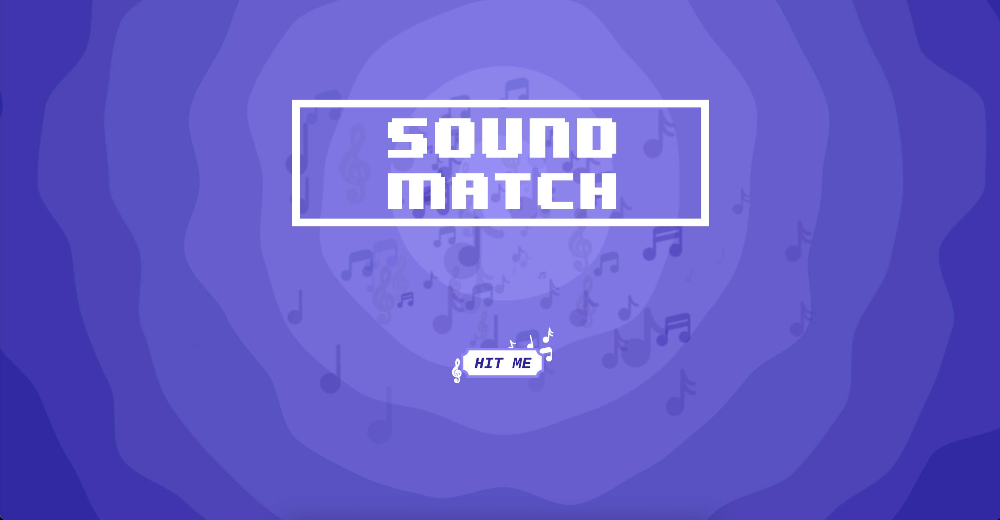

An interactive web game where users listen to audio snippets and rebuild an album cover by placing each piece in the correct order. Combines audio playback, drag-and-drop interaction, and visual puzzle mechanics into a compact, playful experience.
Built the full experience from scratch: designed the game logic (shuffling snippets, validating order, scoring), implemented drag-and-drop UI for the album cover puzzle, and integrated Web Audio for playback. Created clear feedback so users know when they’ve matched correctly.
HTML, CSS, JavaScript, Web Audio API
